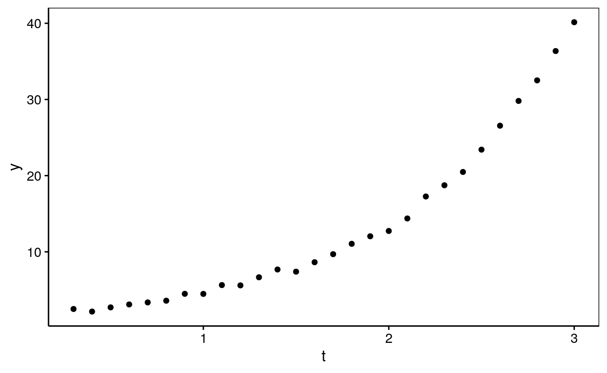
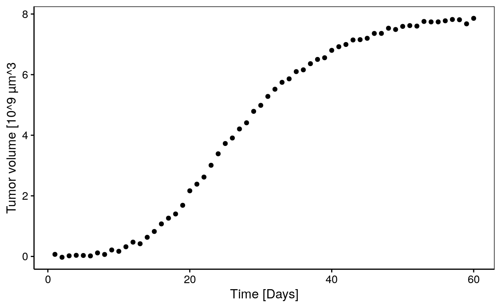

Science des données biologiques II
Réalisé par le service d'Écologie numérique, Université de Mons (Belgique)Objectifs
- Maîtriser l’ajustement d’une courbe dans un nuage de points à l’aide de la régression non linéaire.
Croissance exponentielle
Réalisez une régression non linéaire sur le jeu de données df1 de la variable y en fonction de la variable t.
Vous avez à votre disposition :
- le graphique suivant pour visualiser les données

- la fonction suivante pour calculer votre modèle
exponent <- function(x, y0, k) y0 * exp(k * x)Fixez vos paramètres de départ à 1 pour y0 et à 0.5 pour k et affichez les différentes étapes du calcul itératif.
expo <- ___(data = ___, ___ ~ ___(t, ___, ___), start = list(___ = ___, ___ = ___), trace = TRUE)
summary(___)expo <- nls(data = df1, y ~ exponent(t, ___, ___),
start = list(y0 = ___, k = ___), trace = TRUE)
summary(___)
#### ATTENTION: Hint suivant = solution !####expo <- nls(data = df1, y ~ exponent(t, y0, k),
start = list(y0 = 1, k = 0.5), trace = TRUE)
summary(expo)Volume tumoral
Des chercheurs en cancérologie essayent de modéliser la croissance tumoral. Pour cela, ils ont mesuré l’évolution du volume de la tumeur au cours du temps. Ils obtiennent le graphique suivant :

Aidez-les en réalisant les différents modèles proposés ci-dessous et sélectionnez le meilleur.
Courbe logistique
A partir du jeu de données tumor, modéliser la croissance tumorale (volume) en fonction du temps (time) en utilisant une courbe logistique. Calculez le critère d’Akaïke pour votre modèle.
logis <- nls(data = ___, ___ ~ SSlogis(___, ___, ___, ___))
summary(___)
___(___)logis <- nls(data = tumor, volume ~ SSlogis(time, ___, ___, ___))
summary(___)
___(logis)
#### ATTENTION: Hint suivant = solution !####logis <- nls(data = tumor, volume ~ SSlogis(time, Asym, xmid, scal))
summary(logis)
AIC(logis)Modèle de Gompertz
A partir du jeu de données tumor, modéliser la croissance tumorale (volume) en fonction du temps (time) en utilisant le modèle de Gompertz. Calculez le critère d’Akaïke pour votre modèle.
gomp <- nls(data = ___, ___ ~ SSgompertz(___, ___, ___, ___))
summary(___)
___(___)gomp <- nls(data = tumor, volume ~ SSgompertz(time, ___, ___, ___))
summary(___)
___(gomp)
#### ATTENTION: Hint suivant = solution !####gomp <- nls(data = tumor, volume ~ SSgompertz(time, Asym, b2, b3))
summary(gomp)
AIC(gomp)Modèle de von Bertalanffy
A partir du jeu de données tumor, modéliser la croissance tumorale (volume) en fonction du temps (time) en utilisant le modèle de von Bertalanffy. Calculez le critère d’Akaïke pour votre modèle.
vb <- nls(data = ___, ___ ~ SSasympOff(___, ___, ___, ___))
summary(___)
___(___)vb <- nls(data = tumor, volume ~ SSasympOff(time, ___, ___, ___))
summary(___)
___(vb)
#### ATTENTION: Hint suivant = solution !####vb <- nls(data = tumor, volume ~ SSasympOff(time, Asym, lrc, c0))
summary(vb)
AIC(vb)Comparaison des modèles à partir du critère d’Akaïke
Conclusion
Vous venez de terminer votre séance d’exercice.